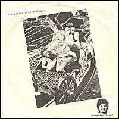

1980 - Rough Trade - RT051 - 7"
Songs:
Smashing Time
King And Country
Nicholas Parsons: Guitar / Vocals
Russel Harty: Bass
Melvyn Bragg: Drums
Bamber Gascoigne: Guitar
Produced by Craig Sinclair. Engineered by Gavin Maxwell.
Artwork by Giles Fortescue. Hair by Justin St. Laurent.
"I'd prefer to remain a mystery; I never like to give my backgrounds and,
anyway, I make it all different all the time I'm asked. It's not just that
it's part of my "image" not to tell, it's just that I forget what I said
the day before and I have to make it all up again. I don't think I have an
"image" anyway, favourable or unfavourable." [Geoffrey Ingrams].
But the "image" of Geoffrey Ingrams is in fact a mystery. HE is a cult hero,
acclaimed for his prints, for his paintings, and for his films, though it
is for his work in the cinema that he is best known, topically, his latest
film, "MARLEY and the GIRLBOMBS", following the success of "Helicopters",
and his earlier "non-visual" pictures. His desire to involve his audience
in a total experience was what originally led him to open his own club, THE
WOW? CLINIC in London. The thought provoking, disturbing and sensational
images seen and felt there required an appropriate aural dimension and it
was to achieve a degree of control over the music that he decided to form
his own group, TV PERSONALITIES. The many other demands on his time and talents
meant he could not for long remain an active member of the group, but his
instigation of it had predestined its future, and he left an indelible mark
on its style. After his departure the group consisted of: Craig Sinclair
(guitar, vocal, sitar), J.J. Myers (bass guitar, vocal, autoharp), Phil Tomaire
(harmonium, dulcimer) Matthew Spencer Robertson (percussion). [Bradley Emmit
Jnr.]
|